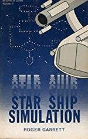

Agrotera.Core
Agrotera Core is the set of open source libraries and core applications that service a multi-player bridge simulator Agrotera.
Agrotera is a game where several individuals take on the roles of various officers and crew members of a simulatted starship bridge, allong the lines of Artemis, Empty Epsilon, and Space Nerds In Space. Each player has a role and is in controll of some aspect of the simulated spaceship, and the entire crew must work together to complete game scenarios.
This started as a capstone project for my Computer Science degree inspired by Roger Garrett's book, The complete Star Ship: A simulation project, but has since been expanded with new goals.
- Cross platform clients
- Windows
- Mac OS
- Linux
- Mobile devices if feasable
- Multiple viewports
- True support for multiple ships/bridges in the same simulation
- Use of seperate ship and simulation applicaitons so the simulation can persist
- Maximum extnsisblity
- Use of a common API for Scripting and Plug-in Based extensions on servers and clients
- Flexable simulation design with as much defined from external sources, scripts, XML, etc.. as possible.
Belllow is some of the design documentation for this version of the project that will built into a playable game.
Overall System Archetecture
The overall system is designed to allow for both single ship and multi-ship play. The seperation of the ship server from the main simulation (Scenario) allows the global game "universe" to persist if desired.

The Agrotera.Core project encompases the following components in the diagram above.
- Ship Server
- Simulation Server
- Global Services
- Libraries used by the Client Applicaiton (Agrotera.Client).
Agrotera.Client is kept as a seperate proejct due to the sizes of the graphical resources it uses.
Console Layouts
Navigation

Responsibilities
The nav station is responsible for how the ship moves through space.
Controls
Nav View
The main circular nav view is a map based projection of the ship in space. Objects around the ship are shown at a selectable relative scale.
The Nav view has 2 modes, map aligned and ship aligned. The main view mode can be toggled. When toggled the smaller view circle will show a simplified version of the unselected view mode, with simple direction vectors instead of actual map positions.
Map alignment
When the main view is in map aligned mode, the view is aligned to galactic north and does not move. The ship’s orientation will be represented by a rotation of the ship icon in the center of the view. All sensor and firing arcs will rotate to the correct orientation. This view is most useful for large scale maneuvers or long range navigation. When shields are active in this view, shield arcs will be presented around the ship icon. (also rotate the shield status display?)
Ship Alignment
When the main view is ship aligned, the ship is always shown pointing in the Y+ direction (Up) on the screen. All objects around the ship are shown relative to this orientation. This view is most useful for close range combat maneuvers.
Shield Status
A shield status indicator is shown above the main nav view. This display is used to show the relative shield strength of the various shield sections.
Ship Status
The upper right corner of the display shows a minimal ship status summary, with the two power settings the pilot will care about, engine and maneuver power. Additional displays for hull and fuel are available.
Navigation Database
Below the status display is the interface to the ship’s navigational database. Here the pilot can look up navigational information about known locations and entities. The coordinates of any database item can be transferred to the course plotter for further use.
FTL Controls
The lower right corner of the nav display contains the FTL controls, including
FTL status
FTL distance and speed settings
FTL waypoint List
FTL autopilot
Course Plotter
This control helps the pilot build up a navigational course, with one or more waypoints. A course is a series of locations and maneuver types. FTL waypoints can be feed automatically to the FTL waypoint if desired.
Course History
This is a list of all specific destinations and sighted items during voyage. Any course history item can be reloaded into the course plotter. The current location of the vessel can be “bookmarked” in the course history, for later reuse, or inclusion into the navigational database.
Movement controls
The ship’s sub light movement is controlled by 4 control elements
Heading
The heading can be set in multiple ways
-
Direct Entry in the heading control at the top center of the display
Direct heading
Current Target
Clicking on the main view while in map centric mode.
Manually Steering via the tiller control in the bottom center of the display
Course Waypoints loaded from the course plotter
Speed
Speed is set by the speed slider to the left of the main view. This sets the thrust output of the main sub light engines.
Thruster controls
For combat maneuvers or precision docking, thrusters can be used to translate the ship for short bursts using the maneuvering thruster controls.
Docking
When within range of an auto-dock compatible system, the auto dock button will appear next to the FTL controls. This will turn control over to the docking station and automatically dock the ship.
Weapons

Responsibilities
The weapons station is responsible for managing the ships offensive and defensive systems.
Controls
Common elements from navigation
The weapons console shares the same main view and shield status system as the navigation console. Clicking on the main view does not seer the ship but instead selects targets for weapons.
Ship Status
The upper right corner of the display shows a minimal ship status summary, with the two power settings the gunner will care about, beam and missile power. Additional displays for hull and fuel are available.
Threat Board
The threat board lists all objects within actionable range around the ship. Objects are broken into categories based on their type and then sorted by distance/speed.
Targeted and Hostile objects
-
Munitions in flight
- Munitions fired by the ship can be prematurely detonated here.
Unknown or unidentified objects
Known friendly objects
Beams
The beams control allows the gunner to select the power and recharge rate of each beam weapon bank on the ship. When desired they can be fired on the currently selected target, or set to automatically track and fire on individual targets. Beam weapon frequencies can be set for the needs of specific targets.
Missiles
The missile control panel allows the gunner to load the missile tubes of the ship with specific munitions and fire them at selected targets. Tubes can be set to automatically reload with specific munitions or be manually loaded/unloaded as desired.
Target Display
Science information about the currently selected target is displayed in the lower left corner of the screen. If detailed scans of the target have been made, specific shield and weapon information on the subject will be shown.
Engineering

Responsibilities
The engineering station is responsible for maintaining the operation and flight status of the ships mechanical systems.
Controls
Ship Status
The upper right corner of the display shows ship status, with hull and fuel displays. Total coolant and batter status are also shown along with controls for charging and discharging the battery from main power.
When docked with a station or another vessel, any external inputs or outputs will be shown below the battery display.
Shield Management
Engineering maintains a more detailed shield status display and has additional controls to manage the energy levels of individual shield banks. Engineering can change the charge rate of specific shield capacitors or transfer shield buffers between banks.
Damage Control
The lower right of the display is dedicated to damaged systems and the options available to repair them. Damaged systems are displayed in a list as well as on the master systems display (MSD) image. Damage control crews can be assigned to specific repair tasks as needed. The amount of spare parts available for repairs is shown below the MSD as well as a list of jury rigged damage bypasses. Bypasses may restore some functionality to a system but at some cost, usually degraded performance of another system or increased power cost / heat generation.
Power Distribution
This controls how much power the ship produces and where it is directed. It also displays how much heat each system is producing and how the cooling system is performing. Power and coolant can be adjusted on a per system bases as needed.
Sciences

Responsibilities
The science station is responsible for all long range sensor data. The science officer tells the crew what is around them.
Controls
Common elements from navigation
The science console shares the same main view and status system as the navigation console. Clicking on the main view does not seer the ship but instead selects targets for sensor scans. The main view also has a much larger zoom range, able to pull map data from onboard databases.
Long range Passive sensor rings
Around the main view is a series of colored bands that show the direction and strength of various signals that are received by the long range sensor systems on the ship. Bands for Mass, Radiation, and EM emissions will spike based on the properties of the object generating the readings.
Ship Status
The upper right corner of the display shows a minimal ship status summary, with the one power settings the science officer will care about, sensor power. Additional displays for hull and fuel are available.
Map Overview
Above the main view is a global map overview with icons for various points of interest. The main view can be moved to center on objects in this map view by clicking on it.
Contacts List
This control displays the list of objects that have been encountered using the ship’s onboard sensors. The last known position is displayed. Clicking on an item will center the main view on the last known coordinates.
Database
The science officer can search the ship’s database for items. Optionally the ship can suggest topics based on the current target. (allow multiple tabs? Bookmarks?)
Scan Target
Information about the currently selected target is shown here.
Sensors Controls
Here the science officer manages the sensor inputs and analysis. The officer can control if active scans are used, or if only passive data is collected. For active detailed scans the officer uses controls in this area to gain additional data about an object.
Probes
When probes or external sensors are available, they can be selected as data sources from this sub panel.